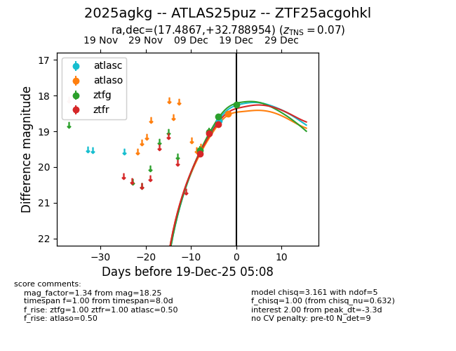
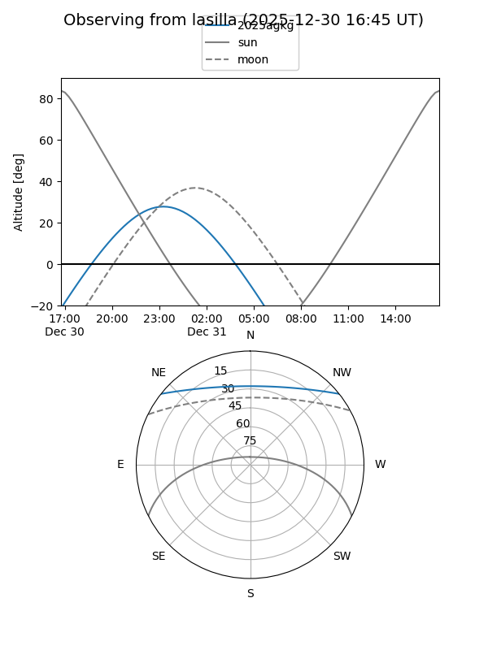
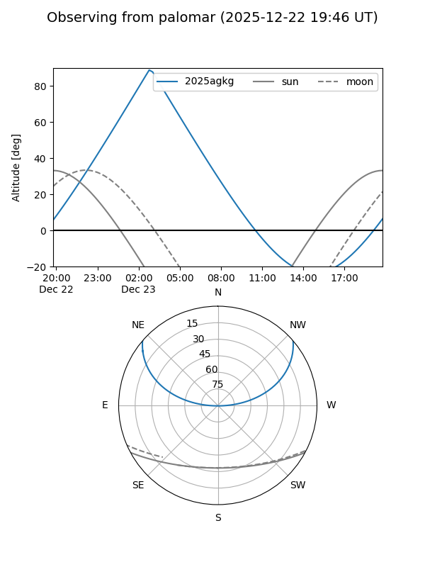
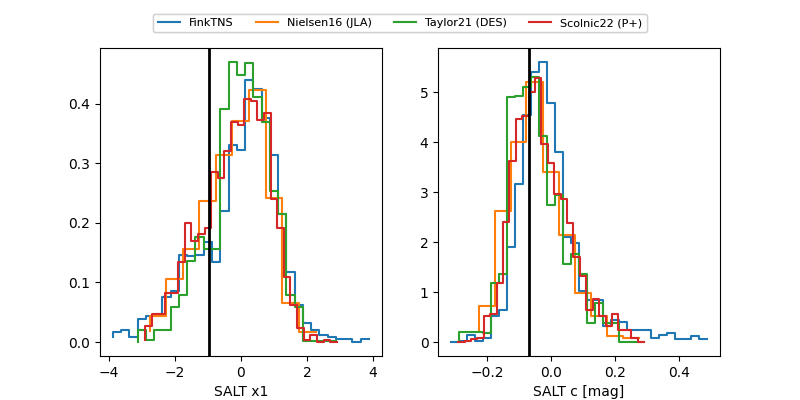

2025agkg
Target 2025agkg at 2025-12-20 23:35
Aliases and brokers:
FINK: fink-portal.org/ZTF25acgohkl
Lasair: lasair-ztf.lsst.ac.uk/objects/ZTF25acgohkl
ALeRCE: alerce.online/object/ZTF25acgohkl
TNS: wis-tns.org/object/2025agkg
YSE: ziggy.ucolick.org/yse/transient_detail/2025agkg
alt names
ZTF25acgohkl (ztf,fink_ztf)
2025agkg (tns,yse)
ATLAS25puz (atlas)
Coordinates:
equatorial (ra, dec) = 17.4867,+32.78895
equatorial (HMS+DMS) = 01:09:56.80,+32:47:20.23
galactic (l, b) = (127.4198,-29.92146)
Flags:
confirmed ia
Photometry:
last atlasc=18.70, atlaso=18.52, ztfg=18.25, ztfr=18.37
1 atlasc, 1 atlaso, 4 ztfg, 4 ztfr detections
Lightcurve

Visibility


Additional plots
